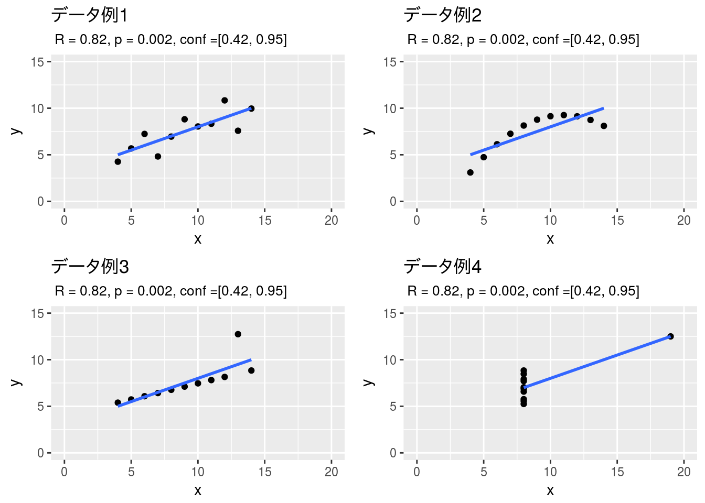
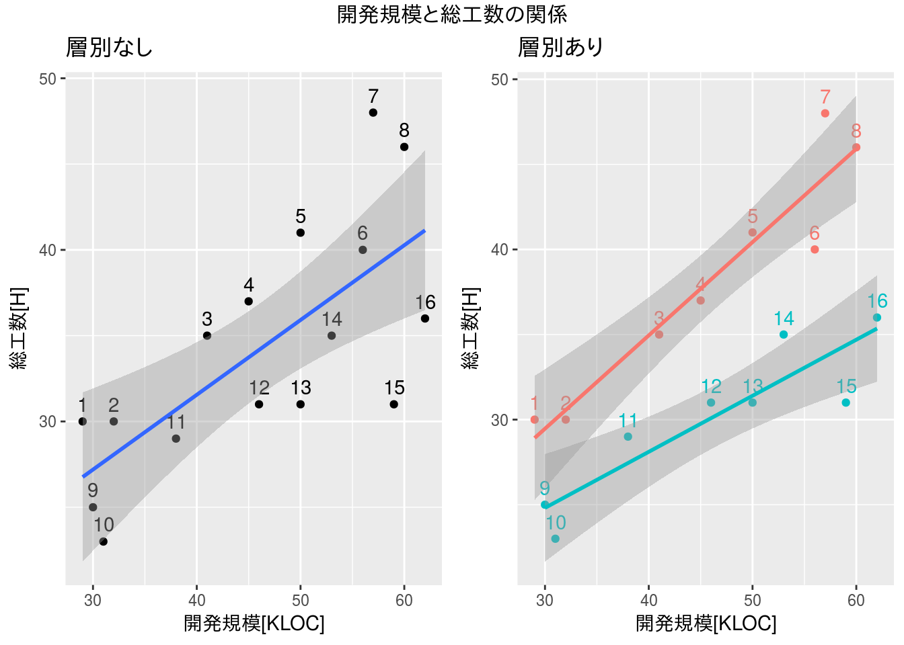
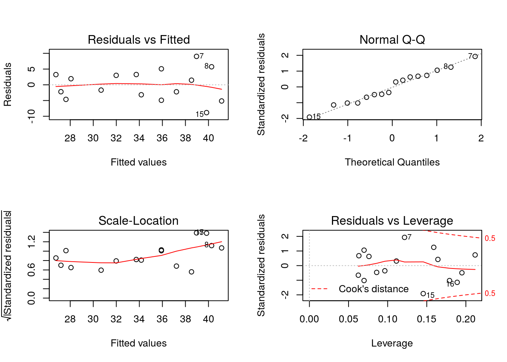
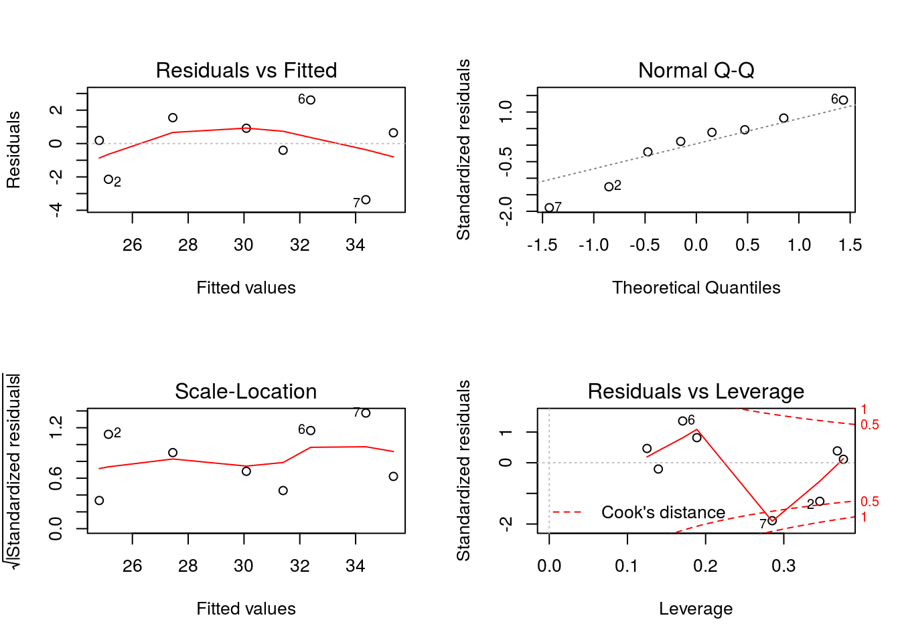
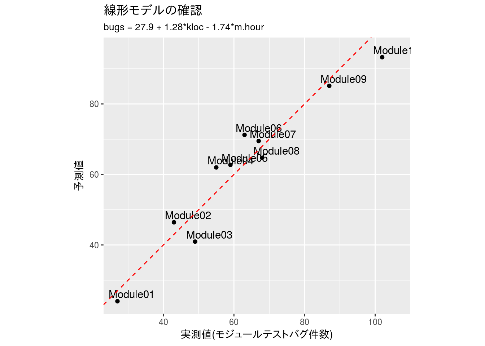
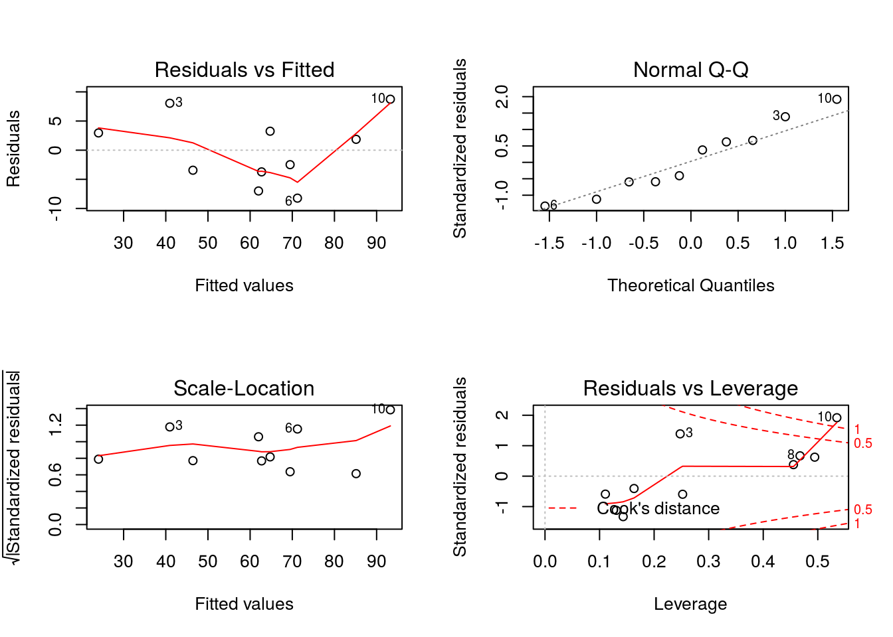

第4章 演習解答例
はじめに
本資料は『ソフトウェアメトリクス統計分析入門』(以降、テキストと記載)の第4章の演習問題をRで解いた際の解答例を示したものです。また、R Markdownを使うメリットを示すための一手段として作成していますので、テキストにおける計算方法とは異なる部分もあります。本資料で使用しているデータの入手に関してはテキストにてご確認下さい。
本資料がHTML形式の場合、Rのコードを参照するには右側にある[Code]ボタンをクリックして下さい。なお、JavaScriptは必ずOnにしてご覧下さい。
演習 4.1
以下に4 つのx, yの2変数のデータセット例があります。それぞれのデータセットごとに相関係数の算出と散布図の作成を行って違いを考察してください。
データの設定
本演習で利用するデータは予めCSVファイルとして保存されているものとします。
可視化
各データ毎に散布図を描き、計算した相関係数、p値、95%信頼区間の値を添えます。比較のために各グラフの縦横軸は同範囲としています。
cor.1 <- cor.test(x$x.1, x$y.1)
cor.2 <- cor.test(x$x.2, x$y.2)
cor.3 <- cor.test(x$x.3, x$y.3)
cor.4 <- cor.test(x$x.4, x$y.4)
xlim <- c(0, 20)
ylim <- c(0, 15)
g.1 <- x %>%
select(x = x.1, y = y.1) %>%
ggplot(aes(x = x, y = y)) +
geom_point() +
ggtitle("データ例1",
subtitle = paste(" R = ", round(cor.1$estimate, 2),
", p = ", round(cor.1$p.value, 3),
", conf =[", round(cor.1$conf.int[1], 2),
", ", round(cor.1$conf.int[2], 2),
"]", sep = "")) +
coord_cartesian(xlim, ylim) +
geom_smooth(method = "lm", se = FALSE)
g.2 <- x %>%
select(x = x.2, y = y.2) %>%
ggplot(aes(x = x, y = y)) +
geom_point() +
ggtitle("データ例2",
subtitle = paste(" R = ", round(cor.2$estimate, 2),
", p = ", round(cor.2$p.value, 3),
", conf =[", round(cor.2$conf.int[1], 2),
", ", round(cor.2$conf.int[2], 2),
"]", sep = "")) +
coord_cartesian(xlim, ylim) +
geom_smooth(method = "lm", se = FALSE)
g.3 <- x %>%
select(x = x.3, y = y.3) %>%
ggplot(aes(x = x, y = y)) +
geom_point() +
ggtitle("データ例3",
subtitle = paste(" R = ", round(cor.3$estimate, 2),
", p = ", round(cor.3$p.value, 3),
", conf =[", round(cor.3$conf.int[1], 2),
", ", round(cor.3$conf.int[2], 2),
"]", sep = "")) +
coord_cartesian(xlim, ylim) +
geom_smooth(method = "lm", se = FALSE)
g.4 <- x %>%
select(x = x.4, y = y.4) %>%
ggplot(aes(x = x, y = y)) +
geom_point() +
ggtitle("データ例4",
subtitle = paste(" R = ", round(cor.4$estimate, 2),
", p = ", round(cor.4$p.value, 3),
", conf =[", round(cor.4$conf.int[1], 2),
", ", round(cor.4$conf.int[2], 2),
"]", sep = "")) +
coord_cartesian(xlim, ylim) +
geom_smooth(method = "lm", se = FALSE)
gridExtra::grid.arrange(g.1, g.2, g.3, g.4, nrow = 2, ncol = 2)
Rcmdrの場合
Rcmdrでは順に処理して下さい。なお、相関係数については［統計量］-［要約］-［相関の検定…］を使うと相関係数の検定(無相関の検定)まで行えるので便利です。

相関の検定

相関の検定ダイアログ
考察
まず、全てのデータに対して相関係数、p値、信頼区間の全てが同一になるデータになっている点は非常に驚きです。
さて、データ例1は相関係数で判断し直線回帰を行うには向いているデータ分布だと考えます、残る3つについては、それぞれ、以下の理由においてデータ例1と同列に扱うのは好ましくないと考えます。
データ例2は明らかに直線関係はなく曲線的な関係であることから相関係数や直線回帰で扱うには不適切です。 データ例3は大きく外れた値が相関係数に影響を与えていることが想定されるので、データ例1と同様に扱う場合は外れ値を外す必要があります。 データ例4は大きく外れた値が相関関係があるように見せかけているのは一目瞭然です。
したがって、相関係数や直線回帰で扱うのに適切なのはデータ例1、ならびに外れ値を外したデータ例2ということになります。ただし、データ例2は本当に外れ値を外すべきかどうかはデータを調べて本当に外れ値なのかどうかを判断してからの方がベターだと考えます。
演習 4.2
第4章の補足4.1を参考にして偏相関係数を算出します。開発規模、モジュールテスト工数、システムテストバグ件数のデータを用いて開発規模を制御変数としたモジュールテスト工数とシステムテストバグ件数の偏相関係数を算出してください。 ただし、Rコマンダーは使用せず以下の手順で行ってください。
手順1.開発規模とモジュールテスト工数の単回帰分析の回帰パラメータを算出
手順2.同様に開発規模とシステムテストバグ件数の単回帰分析の回帰パラメータを算出
手順3.算出したパラメータ値を使ってモジュールテスト工数とシステムテストバグ件数の予測値を入力
手順4.「実測値－予測値」でモジュールテスト工数とシステムテストバグ件数の残差を入力
手順5.モジュールテスト工数残差とシステムテストバグ件数残差の相関係数を算出
これが、開発規模を制御変数としたモジュールテスト工数とシステムテストバグ件数の偏相関係数となります。
データの設定
本演習で利用するデータは予めCSVファイルとして保存されているものとします。
手順1
開発規模を説明変数とモジュールテスト工数を目的変数として単回帰分析の回帰パラメータを算出します。
model.lm.mt.hour.kloc <- x %>%
lm(mt.hour ~ kloc, data = .)
summary(model.lm.mt.hour.kloc)##
## Call:
## lm(formula = mt.hour ~ kloc, data = .)
##
## Residuals:
## Min 1Q Median 3Q Max
## -158.361 -74.586 -4.951 87.933 134.786
##
## Coefficients:
## Estimate Std. Error t value Pr(>|t|)
## (Intercept) 135.199 28.854 4.686 0.000142 ***
## kloc 14.716 1.424 10.331 1.83e-09 ***
## ---
## Signif. codes: 0 '***' 0.001 '**' 0.01 '*' 0.05 '.' 0.1 ' ' 1
##
## Residual standard error: 89.04 on 20 degrees of freedom
## (1 observation deleted due to missingness)
## Multiple R-squared: 0.8422, Adjusted R-squared: 0.8343
## F-statistic: 106.7 on 1 and 20 DF, p-value: 1.826e-09手順2
同様に開発規模を説明変数とシステムテストバグ件数を目的変数として単回帰分析の回帰パラメータを算出します。
model.lm.st.bugs.kloc <- x %>%
lm(st.bugs ~ kloc, data = .)
summary(model.lm.st.bugs.kloc)##
## Call:
## lm(formula = st.bugs ~ kloc, data = .)
##
## Residuals:
## Min 1Q Median 3Q Max
## -3.824 -2.139 -1.021 1.838 5.868
##
## Coefficients:
## Estimate Std. Error t value Pr(>|t|)
## (Intercept) 2.0577 0.9573 2.149 0.0434 *
## kloc 0.5147 0.0477 10.791 5.02e-10 ***
## ---
## Signif. codes: 0 '***' 0.001 '**' 0.01 '*' 0.05 '.' 0.1 ' ' 1
##
## Residual standard error: 2.981 on 21 degrees of freedom
## Multiple R-squared: 0.8472, Adjusted R-squared: 0.8399
## F-statistic: 116.4 on 1 and 21 DF, p-value: 5.025e-10手順3
算出したパラメータ値を使ってモジュールテスト工数とシステムテストバグ件数の予測値を算出します。なお、欠損値があるため別々に計算してマージします。
x.fitted.mt.hour <- x %>%
tidyr::drop_na(mt.hour) %>%
mutate(fitted.mt.hour = fitted(model.lm.mt.hour.kloc)) %>%
select(project, fitted.mt.hour)
df_print(x.fitted.mt.hour)x.fitted.st.bugs <- x %>%
tidyr::drop_na(st.bugs) %>%
mutate(fitted.st.bugs = fitted(model.lm.st.bugs.kloc)) %>%
select(project, fitted.st.bugs)
df_print(x.fitted.st.bugs)x.fitted <- x %>%
dplyr::full_join(x.fitted.mt.hour, by = "project") %>%
dplyr::full_join(x.fitted.st.bugs, by = "project")
df_print(x.fitted)手順4
「実測値－予測値」でモジュールテスト工数とシステムテストバグ件数の残差を計算します。
x.residula <- x.fitted %>%
mutate(residual.mt.hour = (mt.hour - fitted.mt.hour),
residual.st.bugs = (st.bugs - fitted.st.bugs))
df_print(x.residula)手順5
モジュールテスト工数残差とシステムテストバグ件数残差の相関係数を算出します。
cor.test(x.residula$residual.mt.hour, x.residula$residual.st.bugs)##
## Pearson's product-moment correlation
##
## data: x.residula$residual.mt.hour and x.residula$residual.st.bugs
## t = 0.046633, df = 20, p-value = 0.9633
## alternative hypothesis: true correlation is not equal to 0
## 95 percent confidence interval:
## -0.4129971 0.4301444
## sample estimates:
## cor
## 0.01042694比較
比較のためにRで直接、偏相関係数を算出します。
x %>%
dplyr::select(-project) %>%
RcmdrMisc::partial.cor(tests = TRUE, use = "complete")##
## Partial correlations:
## kloc mt.hour st.bugs
## kloc 0.00000 0.65796 0.68892
## mt.hour 0.65796 0.00000 0.01043
## st.bugs 0.68892 0.01043 0.00000
##
## Number of observations: 22
##
## Pairwise two-sided p-values:
## kloc mt.hour st.bugs
## kloc 0.0012 0.0006
## mt.hour 0.0012 0.9642
## st.bugs 0.0006 0.9642
##
## Adjusted p-values (Holm's method)
## kloc mt.hour st.bugs
## kloc 0.0024 0.0017
## mt.hour 0.0024 0.9642
## st.bugs 0.0017 0.9642演習 4.3
以下にプロジェクトごとの開発規模（KLOC）、総工数（人月）、製品カテゴリのデータがあり開発規模から総工数を予測する回帰式をつくろうとしています。 製品カテゴリの層別に散布図を作成して必要ならば製品カテゴリ別に回帰式を作成してください。
データの設定
本演習で利用するデータは予めCSVファイルとして保存されているものとします。
散布図の描画
開発規模と総工数の関係を散布図で描きます。散布図は製品カテゴリによる層別なし／ありの両方で描きます。
gg.non <- x %>%
ggplot(aes(x = kloc, y = man.hour)) +
geom_point() +
geom_text(aes(x = kloc, y = man.hour + 1, label = row.names(.))) +
geom_smooth(method = "lm", se = TRUE) +
ggtitle("層別なし") +
xlab("開発規模[KLOC]") + ylab("総工数[H]")
gg.yes <- x %>%
ggplot(aes(x = kloc, y = man.hour, colour = category)) +
geom_point() +
geom_text(aes(x = kloc, y = man.hour + 1, label = row.names(.))) +
geom_smooth(method = "lm", se = TRUE) +
ggtitle("層別あり") +
xlab("開発規模[KLOC]") + ylab("総工数[H]") +
theme(legend.position = "none")
gridExtra::grid.arrange(gg.non, gg.yes, nrow = 1, ncol = 2,
top = grid::textGrob("開発規模と総工数の関係"))
回帰モデルの作成
層別なしの場合
model.lm.non <- x %>%
lm(man.hour ~ kloc, data = .)
summary(model.lm.non)##
## Call:
## lm(formula = man.hour ~ kloc, data = .)
##
## Residuals:
## Min 1Q Median 3Q Max
## -8.8340 -3.5339 -0.1041 3.2474 9.0377
##
## Coefficients:
## Estimate Std. Error t value Pr(>|t|)
## (Intercept) 14.1204 5.3343 2.647 0.01914 *
## kloc 0.4358 0.1123 3.881 0.00166 **
## ---
## Signif. codes: 0 '***' 0.001 '**' 0.01 '*' 0.05 '.' 0.1 ' ' 1
##
## Residual standard error: 4.994 on 14 degrees of freedom
## Multiple R-squared: 0.5183, Adjusted R-squared: 0.4839
## F-statistic: 15.07 on 1 and 14 DF, p-value: 0.001661層別ありの場合
model.lm.a <- x %>%
filter(category == "A") %>%
lm(man.hour ~ kloc, data = .)
summary(model.lm.a)##
## Call:
## lm(formula = man.hour ~ kloc, data = .)
##
## Residuals:
## Min 1Q Median 3Q Max
## -3.7202 -0.5945 -0.2050 0.6973 3.7316
##
## Coefficients:
## Estimate Std. Error t value Pr(>|t|)
## (Intercept) 13.01961 3.47602 3.746 0.009560 **
## kloc 0.54822 0.07317 7.493 0.000292 ***
## ---
## Signif. codes: 0 '***' 0.001 '**' 0.01 '*' 0.05 '.' 0.1 ' ' 1
##
## Residual standard error: 2.247 on 6 degrees of freedom
## Multiple R-squared: 0.9034, Adjusted R-squared: 0.8874
## F-statistic: 56.14 on 1 and 6 DF, p-value: 0.0002921model.lm.b <- x %>%
filter(category == "B") %>%
lm(man.hour ~ kloc, data = .)
summary(model.lm.b)##
## Call:
## lm(formula = man.hour ~ kloc, data = .)
##
## Residuals:
## Min 1Q Median 3Q Max
## -3.3659 -0.8368 0.4162 1.0749 2.6105
##
## Coefficients:
## Estimate Std. Error t value Pr(>|t|)
## (Intercept) 14.93200 3.10910 4.803 0.00299 **
## kloc 0.32939 0.06545 5.033 0.00237 **
## ---
## Signif. codes: 0 '***' 0.001 '**' 0.01 '*' 0.05 '.' 0.1 ' ' 1
##
## Residual standard error: 2.105 on 6 degrees of freedom
## Multiple R-squared: 0.8085, Adjusted R-squared: 0.7766
## F-statistic: 25.33 on 1 and 6 DF, p-value: 0.002373結論
各モデルのp値(t検定、F検定共)を見る限りモデルとしては使えそうなモデルである。また、各モデルの寄与率は以下の通りであり、層別なしの場合でも約5割のラインを超えている。
この結果からどのモデルを採用しても予測できると判断できるが、層別なしの場合より層別ありの方が寄与率が高いので、今回は層別ありのモデルを採用することとする。
層別なしの場合 \[R^2 = 0.52\]
層別ありの場合 \[R_a^2 = 0.9 ／ R_b^2 = 0.81\]
モデルの評価
単回帰なので、ここまで見る必要はないが、基本的診断プロットを行ってみます。基本的診断プロットを見ると寄与率は低いものの層別なしの場合の方が良さそうに見えます。
oldpar <- par()
par(mfrow = c(2, 2))
plot(model.lm.non)
plot(model.lm.a)
plot(model.lm.b)
par(oldpar)演習 4.4
以下にモジュールごとの規模（KLOC）、レビュー実施時間（人時）、モジュールテストバグ件数のデータがあります。 目的変数をモジュールテストバグ件数、説明変数を規模とレビュー実施時間の2つとした重回帰分析を行ってください。 重回帰分析は本文中では扱っていませんが、操作方法は単回帰分析とほぼ同様です。説明変数選択の際にCtrlキーを押しながら複数選択して実行するだけです。チャレンジしてみてください。
データの設定
本演習で利用するデータは予めCSVファイルとして保存されているものとします。
データの確認
x %>%
select(-module) %>%
psych::pairs.panels(smooth = FALSE, scale = TRUE, lm = TRUE)
重回帰分析
result.lm <- x %>%
lm(bugs ~ kloc + m.hour, data = .)
summary(result.lm)##
## Call:
## lm(formula = bugs ~ kloc + m.hour, data = .)
##
## Residuals:
## Min 1Q Median 3Q Max
## -8.2244 -3.6497 -0.3115 3.1793 8.7418
##
## Coefficients:
## Estimate Std. Error t value Pr(>|t|)
## (Intercept) 27.9031 8.5614 3.259 0.0139 *
## kloc 1.2804 0.1419 9.023 4.19e-05 ***
## m.hour -1.7392 0.5408 -3.216 0.0147 *
## ---
## Signif. codes: 0 '***' 0.001 '**' 0.01 '*' 0.05 '.' 0.1 ' ' 1
##
## Residual standard error: 6.68 on 7 degrees of freedom
## Multiple R-squared: 0.9238, Adjusted R-squared: 0.902
## F-statistic: 42.44 on 2 and 7 DF, p-value: 0.0001221重回帰分析(直線回帰)の結果、開発規模(kloc)とレビュー工数(m.hour)でモジュールテストにおけるバグの摘出数の約9割を説明できることが分かります。また、F検定のp値を見ても妥当なことが分かります。
モデルの確認
念のために実測値と予測値の比較を行ってみます。予測値はfitted {stats}関数、または、predict {stats}関数で計算できます。Rcmdrの予測値の計算ではfitted {stats}が使われています。
x %>%
mutate(fit = fitted(result.lm)) %>%
select(bugs, fit, module) %>%
ggplot(aes(x = bugs, y = fit)) +
geom_point() +
geom_text(aes(x = bugs + 4, y = fit + 2, label = module)) +
coord_equal() +
xlab("実測値(モジュールテストバグ件数)") + ylab("予測値") +
ggtitle("線形モデルの確認",
subtitle = "bugs = 27.9 + 1.28*kloc - 1.74*m.hour") +
geom_abline(linetype = "dashed", colour = "red")
Rcmdrの場合
Rcmdrを使う場合は［モデル］-［計算結果をデータとして保存…］を実行し表示されたダイアログから“予測値”のみをチェックして［OK］ボタンをクリックします。

計算結果をデータとして保存

保存するデータの選択
(アクティブ)データセットに選択したデータ(fitted.RegModel.1)が追加されます。

追加されたデータ(fitted.RegModel.1)
その後、［グラフ］-［散布図…］を実行しx変数(説明変数)にモジュールテストバグ件数、y変数(目的変数)にモジュールテストバグ件数の予測値(fitted.RegModel.1)を選択して散布図を描きます。

実測値と予測値の散布図
Rcmdrのメニューからは\(y = x\)の直線(赤点線)は引けませんので、Rスクリプト画面からabline(0, 1, col = "red", lty = "dashed")を実行して下さい。

\(y = x\)の直線を引くための関数abline

実測値と予測値の散布図(\(y = x\)の直線付き)
基本的診断プロット
ネット上の回帰分析の解説ではあまり触れられることがないのですが、回帰モデルをより詳しく確認(診断)するにはplot {graphics}関数でlm {stats}関数の計算結果に対する基本的診断プロットを行います。
oldpar <- par()
par(mfrow = c(2, 2))
plot(result.lm)
par(oldpar)Rcmdrの場合
Rcmdrを使う場合は［モデル］-［グラフ］-［基本的診断プロット］を実行して下さい。

基本的診断プロット
基本的診断プロットの見かた
基本的診断プロットは回帰診断に使う予測値や残差等をプロットしたグラフの集合で回帰分析の結果(残差)を視覚的に確認できます。各グラフの解説はRで線形単回帰分析や里洋平氏のブログ、里洋平氏のブログを参考にしています。
oldpar <- par()
par(mfrow = c(2, 2))
plot(result.lm)
par(oldpar)Residuals vs Fitted
左上にあるこのグラフは残差の全体像を確認するためのグラフです。横軸が予測値(Fitted valuse)、縦軸が残差(Residuals)になっています。
Normal Q-Q
右上にあるこのグラフは残差が正規分布に従っているかを確認するためのグラフです。黒点線の直線に沿っていれば概ね正規分布に従っていると言えます。
回帰分析においては残差が(標準)正規分布に従うと過程しているため残差が直線的に並ぶ程、モデルとしては良いと判断できます。今回のケースでは残差は概ね正規分布に従っていると判断できます。
Scale-Location
左下にあるこのグラフは残差の変動状況を考察するためのグラフです。横軸が予測値(Fitted valuse)、縦軸が標準化した残差(Standardized residuals)の平方根になっています。
Residual vs Leverage
右下にあるこのグラフは各データがモデルの当てはまり具合にどの程度影響があるかを測るためのグラフです。横軸はてこ値(Leverage)、縦軸が標準化した残差(Standardized residuals)になっています。
てこ値(Leverage)が大きい程、モデルの当てはまりがよく、赤点線で示されているクックの距離(Cook’s distance)が0.5を超えると影響力があり、1を超えると特異的な影響力があると見なされます。今回のケースではModule10のデータが回帰モデルに大きな影響を与えていると判断できます。